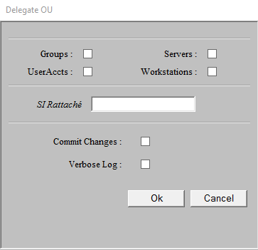
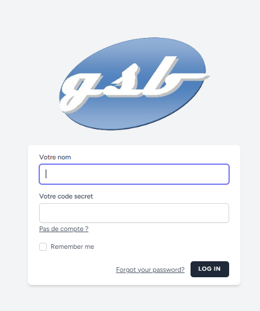
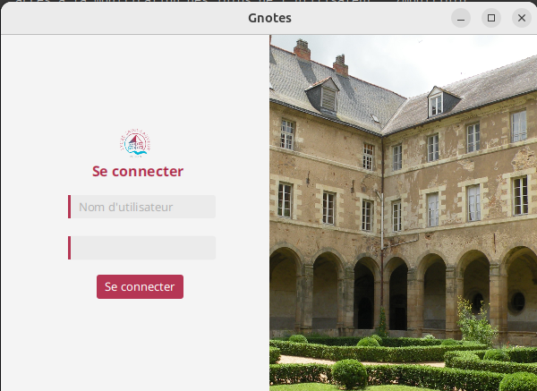

Mes réalisations

Converstion de script VB en PS1
Mon objectif était la conversion des scripts responsables de délégation de l’Active Directory qui étaient en Visual Basic (qui va bientôt être discontinué par Microsoft). Le script permet de simplifier l’attribution des GPO aux serveurs en fonction de leur Unité Organisationnelle (de l’utilisateur, du groupe, du serveur et/ou de la workstation) à l’aide de Template spécifique à chaque organisation. Le langage choisi pour la conversion est Powershell, qui permet de conserver les fonctionnalités de Visual Basic en le simplifiant grace aux commandes Powershell.
Projet GSB
Besoin : Le laboratoire Galaxy Swiss Bourdin (GSB) est issu de la fusion entre le géant
américain Galaxy (spécialisé dans le secteur des maladies virales dont le SIDA et les
hépatites) et le conglomérat européen Swiss Bourdin (travaillant sur des médicaments plus
conventionnels), lui-même déjà union de trois petits laboratoires. Le laboratoire Galaxy Swiss
Bourdin (GSB) désire à disposition des visiteurs médicaux une application Web permettant
de centraliser les comptes-rendus (rapports) de visite. L’application web reprendra le
périmètre applicatif de l’application Access 2003. L’application fournira ainsi une description
des produits du laboratoire, les coordonnées des praticiens et des informations détaillées
concernant les rapports des visites.
Fonctionnement : L’application est réalisée avec le framework Laravel, complétée par le
framework Bootstrap. Elle utilise une base de données. L’application permet de consulter des
informations sur les praticiens, les informations des médicaments, les informations des
visiteurs depuis leurs onglets respectifs. Le visiteur peut s’authentifier depuis l’onglet «
Connexion », il saisit son identifiant et son mot de passe. Il peut ajouter, consulter et
exporter les comptes-rendus saisis depuis la barre de navigation et la page d’accueil. Il peut
consulter et modifier son profil depuis le bouton « Profil ».


Projet Gnotes
Besoin : Le coordinateur de la formation de BTS SIO a exprimé son souhait de fournir à tous les professeurs de la formation un outil de bureau facile à utiliser pour saisir les notes des étudiants.
Il a demandé à l’équipe de développement informatique du lycée de lui proposer une solution viable facile à maintenir, robuste et à moindre coût.
Chaque enseignant(e) par matière peut saisir le coefficient de la matière pour un contrôle donné,
la note et les appréciations pour chaque étudiant. Il/elle peut voir, au fur et à mesure de la saisie, la moyenne, la note minimale et maximale de la classe pour sa matière.
Chaque enseignant(e) doit avoir accès à une vue d’ensemble des notes et des appréciations de toutes les matières des étudiants de la formation,
avec affichage du(es) major(s) de la promotion par semestre. Dès la première version de l’application,
le coordinateur de la formation a exigé que chaque enseignant(e) doit pouvoir toujours saisir ses notes même s’il/elle est hors réseau.
Fonctionnement : L’application est réalisée avec java, complétée par le framework Spring Boot.
Elle utilise une base de données. L’application permet de consulter des informations sur les étudiants et les informations des contrôles.
L’enseignant peut s’authentifier depuis l’onglet « Connexion », il saisit son identifiant et son mot de passe.
Il peut ajouter, consulter, modifier et supprimer les contrôles saisis depuis l’onglet contrôle.
Il peut consulter les étudiants depuis l’onglet étudiant.
Site internet Ealtec.com
Ce projet consistait à mettre à jour le site internet de l'entreprise Ealtec,
qui propose des solutions matérielles informatiques pour les industriels,
la distribution / représentation de fabricant de solutions informatiques,
et la conception et fabrication de solutions informatiques sur mesure.
Ma mission consistait à apporter de nouvelles idées pour le design du site
et de mettre en oeuvre les propositions retenues.
Le site a été créé sur le CMS Drupal et
les langages que j'ai utilisé sont HTML/CSS, Javascript et XML.

Image intéractive réalisé pour le site Ealtec

Liens API Jamespot et IdeeLibre
Cette mission a été réalisé durant mon stage à l'agglomération de Redon.
L'objectif était de permettre aux élus, utilisateurs de la plateforme Idelibre,
d’accéder à leur documentation ainsi qu’à leurs convocations à partir de la plateforme collaborative Jamespot.
Le but était de pouvoir utiliser les API respectives de chaque site afin de récupérer les données sur IdeLibre,
les transférer sur Jamespot et les afficher dans un nouvel article.
Mes tâches étaient les suivante: découverte du fonctionnement des API utilisés,
l'extractions des données utiles pour le projet à l’aide de Postman
et la rédaction d’une documentation afin de présenter les données recueillies
et leur utilisation afin que quelqu’un puisse continuer le travail sur les API.
Mise à jour de l'application de comptage
Cette mission a été réalisé durant mon stage à l'agglomération de Redon.
L'objectif était l’amélioration de l’application de comptage utilisée par l’accueil de l’agglomération de Redon.
Chaque personne entrant sur le site et chaque appel téléphonique entrant sont comptabilisés via une tablette,
ainsi que leur motif afin de pouvoir les enregistrer sur une base de données ou un tableur.
L’ancienne version n’était pas responsive, demandant de scroll pour trouver le compteur recherché, la rendant peu pratique.
Mes tâches étaient les suivantes: le nettoyage de l’ancien code CSS,
l’apport de changements au code HTML,
la création d’un nouveau “media queries” adapté à la tablette en format paysage
et la maintenance de l’application après sa mise en place.


Création d'un site internet pour la maire de Saint-Perreux
Cette mission a été réalisé durant mon stage à l'agglomération de Redon.
L'objectif était la création d’un site internet pour la mairie de Saint-Perreux.
Redon Agglomération propose aux mairies qui le souhaitent, des sites basés sur un template commun comprenant des pages communes.
J’ai récupéré le projet de site après un premier visionnage par la mairie.
Toute la construction du site s’est faite avec le builder Avada sur Wordpress.
Mes tâches pour la création de ce site étaient les suivantes : la récupération des pages sur le site actuel de Saint-Perreux,
la production de pages à partir des données récupérées,
la création d’un menu organisé et lisible en haut de page
et le choix d’un style cohérent sur toutes les pages avec un respect des conventions du web.
Réalisation d'une application quizz
Cette mission a été réalisé durant ma première année de BTS. L'objectif était la création d'une application quizz sous python qui permettait à l'utilisateur de créer des thèmes, des questions et leurs réponses ou de pouvoir choisir un thème et de répondre à un nombre choisit de question. L'application avait une gestion des exeptions et le stockage des thèmes, questions et réponses était fait via des fichiers Json. Nous avons ensuite essayé de transposer cette application sous java en créant une interface graphique pour l'application à l'aide de SceneBuilder.

Création et mise en ligne d'un site personnel
Cette mission a été réalisé durant ma première année de BTS. L'objectif était la création d'un site au sujet personnel. Il à ensuite été poster en ligne puis a été modifier afin de pouvoir gérér la connexion des utilisateurs ainsi que la gestion de session et des cookies.